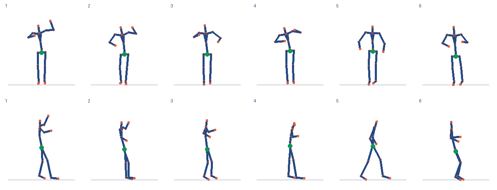

2026-11-10 · 费用与预留合计 ¥1.009792 / ¥10
| 模型 | 正确/总数 | 三类平均正确率 | 不确定 | 无效/缺失 | 中位耗时 | 估算费用 |
|---|---|---|---|---|---|---|
| qwen3.8-flash | 2/3 | 66.7% | 0 | 0 | 1.42 s | ¥0.002049 |
| qwen3.8-max-2026-09-02 | 1/3 | 33.3% | 0 | 0 | 2.73 s | ¥0.031104 |
| 模型 | 正确/总数 | 三类平均正确率 | 不确定 | 无效/缺失 | 中位耗时 | 估算费用 |
|---|---|---|---|---|---|---|
| qwen3.8-flash | 60/87 | 46.9% | 0 | 0 | 1.70 s | ¥0.059511 |
| qwen3.8-max-2026-09-02 | 74/87 | 76.8% | 0 | 0 | 2.99 s | ¥0.905904 |
公开 IMU + 头部高度 → 固定小模型预测骨架 → qwen3.8-max-2026-09-02 读图 → qwen3.8-flash 选择 → R3 检查

视觉请求 1 次；决策请求 1 次；检查状态：reviewed。
{
"suggested_action": "silent",
"message": null,
"reason": "模拟数据记录了自报无不适，但时效和当前状态未确认；另一模型对髋部变化的观察为不可投递的研究候选且可能出错，缺乏可靠依据进行反馈。",
"evidence": [
"fact_1",
"fact_2"
]
}本次比较的是模型能否读对预测骨架的髋部升降。共90张图来自五段未参与训练的公开录制，每段六个自然窗口，包含倒序与重复帧对照；同源窗口不是独立受试者。几何对照与骨架预测准确性是不同指标。
本演示使用已有五段训练的岭回归基线，不重新训练或调参。训练事件为模拟，输出保存在本机供评审查看。